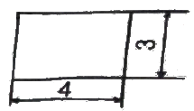
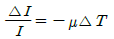
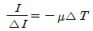
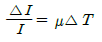
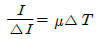
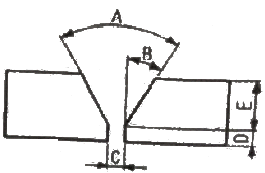

1과목: 방사선투과검사 시험
1. 방사선투과검사에서 시험체 콘트라스트에 영향을 주는 인자가 아닌 것은?
2. 선원으로부터 거리가 2m 일 때 방사선의 강도가 10Ci라면, 5m 일 때의 선원의 강도는 얼마인가?
3. 전자쌍이 생성되려면 문턱에너지 값을 넘어야 한다. 이 값은 얼마인가?
4. 방사선 투과검사에서 선명한 투과영상을 얻기 위한 조건으로 거리가 먼 것은?
5. 방사선투과검사를 할 때, 불필요한 유해 엑스선을 줄이기 위하여 사용하는 기기가 아닌 것은?
6. X선이나 γ선이 물질을 투과 할 때 에 관계되는 I/Io=e-μχ식의 설명으로 옳은 것은?
7. X선 회절법에 대한 설명으로 틀린 것은?
8. 비파괴검사의 품질평가에 대한 적용 예에 대해 설명한 것으로 옳은 것은?
9. 와전류의 특성을 설명한 것 중 틀린 것은?
10. 다음 중 교류가 흐르는 코일을 전도체에 가까이 하면 코일 주위에 발생된 자계가 도체에 작용하여, 도체를 관통하는 자속의 변화를 방해하려는 기전력 변화를 이용한 비파괴검사법은?
11. 다음 중 알루미늄 재료에 적용할 수 없는 비파괴검사법은?
12. 다음 중 방사선투과시험의 장점이 아닌 것은?
13. 시험체의 대상 부위에 따른 비파괴검사법의 적용이 바르게 짝지어진 것은?
14. 초음파탐상검사의 적용 예에 대한 설명으로 옳은 것은?
15. 용접 구조물의 품질 신뢰성이 보장될 수 있도록 침투탐상 시험이 옳게 구성한 제작 공정은?
16. 침투탐상검사의 특징을 설명한 것 중 옳은 것은?
17. 다음 중 비파괴검사법의 종류에 해당되지 않는 것은?
18. 비파괴검사의 종류와 이에 따른 설명으로 틀린 것은?
19. 재료의 자속밀도와 자력이 0(zero)에 근접하였을 때 자력에 대한 자속밀도의 비율을 무엇이라 하는가?
20. 빛의 간섭, 회절에 의해 생기는 무늬로부터 주로 면외(面外) 변위를 측정하는 것은?
2과목: 방사선투과검사 시험
21. 다음 중 연박 증감지를 사용하는데 적합한 경우는?
22. 그림과 같은 형태의 표적을 가진 X선발생장치를 사용시 초점의 크기는 얼마인가?

23. 비듬 또는 담뱃재와 같은 외부 이물질이 연박스크린 표면에 존재할 경우 최종 방사선 투과사진에서는 어떻게 나타나는가?
24. X-선이 필름을 통과할 때 생성되는 자유전자들 때문에 영상이 선명하지 않게 되는 요인은?
25. 방사선투과검사할 때 두꺼운 금속에 대하여는 연박증감지 또는 금속 형광증감지를 사용한다. 이 때 사용되는 금속 형광증감지에 대한 설명으로 틀린 것은?
26. 두께 T의 판 중앙에 미소 두께 △T의 결함이 존재하는 시험체를 촬영하였다. 결함이 없는 곳을 투과한 방사선의 강도를 I, 결함이 존재하는 곳을 투과한 방사선의 강도를 I+△I 라 할 때 선형 흡수계수를 μ라 하면 이들 사이의 관계식을 바르게 나타낸 것은? (단, 산란선의 존재는 무시한다.)




27. 감광유제가 X선, γ선, 빛 또는 전자에 충돌되었을 때 할로겐화는 입자에서 변화가 나타나며, 이를 광량이나 방사선량에 대응하여 현상 가능한 할로겐화는 입자의 집합체가 되는 것을 무엇이라 하는가?
28. 투과사진의 콘트라스트를 ΔD, 식별한계 콘트라스트를 ΔDmin, 겉보기 콘트라스트를 ΔDa이라 할때, 다음 중 결함이 식별되는 조건은?
29. 두께 15mm의 알루미늄합금(2024)인 검사체를 100kV로 방사선투과검사하려 한다. 순수 알루미늄에 대한 노출 도표만 있는 경우, 얼마의 두께인 순수 알루미늄으로 간주하여 노출시간을 정하면 되겠는가? (단, 순수 알루미늄에 대한 알루미늄(2024)의 등가 계수는 1.6이다.)
30. 이온화 방사선을 형광 스크린과 같은 방사선 검출기에 조사시켜 가시상을 제작하는 방법은?
31. 방사선투과사진 촬영시 X-선관에 의해 방출되는 방사선의 총량을 경정하는 요인이 아닌 것은?
32. 강판의 맞대기 용접부를 방사선투과검사시 유효길이의 바깥쪽일수록 나타나는 현상으로 옳은 것은?
33. 다음 중 촬영용 필름의 적절한 현상을 위한 3가지 기본 용액은?
34. 방사선 투과사진 필름의 특성에 대한 설명으로 잘못된 것은?
35. 방사선에 노출되지 않은 필름의 보관방법으로 옳은 것은?
36. 다음 중 방사선 투과사진의 기하학적 불선명도에 직접적으로 영향을 주는 요소는?
37. 방사선 투과사진의 콘트라스트를 입증할 목적으로 사용되는 것은?
38. 방사선투과시험시 노출도표를 작성할 때 고정시켜야 할 인자가 아닌 것은?
39. X선발생장치에서 표적이 국부적으로 과열되는 현상을 줄이기 위해 사용되는 양극의 형태로 가장 효과적인 것은?
40. 계조계 25형의 두께는 얼마인가?
3과목: 방사선안전관리, 관련규격 및 컴퓨터활용
41. 100큐리(Ci)강도의 Ir-192선원으로부터 100피트(feet) 거리에서의 선량율은? (단, Ir=192선원 1큐리(Ci)의 1feet에서의 강도는 5R/hour이다.)
42. 사용시설 등의 경계에 인접하여 사람이 거주하는 구역은 년간 방사선량이 일반인의 선량 한도를 초과하지 아니하여야 하며 1주당 방사선량은 몇 mSv를 초과하지 않아야 하는가?
43. 보일러 및 압력용기에 대한 표준방사선투과검사(ASME Sec.V. Art.22 SE-94)에서 수동현상시에 새 정착액이 필름을 넣어둘 수 있는 최대 시간은?
44. 교육과학기술부고시에 의하면 백혈병의 경우 인과확률이 33%, 고형암의 경우 인과확률이 50%를 초과하는 경우에는 이를 업무상 질병으로 인정하도록 규정하고 있다. 방사선 피폭으로 인한 피부암의 초과위험이 0.4%이고, 피부암의 기저위험이 0.8%라고 가정한다면 인과확률은 얼마인가?
45. 원자력법에 규정한 방사선에 대한 연간 등가선량 한도의 내용 중 옳지 않은 것은?
46. 강용접 이음부의 방사선투과 시험방법(KS B0845)에 따라 강 용접부를 검사할 때 모재 두께가 50mm 인 투과사진의 1종 결함을 관찰하여야 할 시험시야의 크기로 옳은 것은?
47. 540mrad 는 SI 단위로 몇 mGy가 되는가?
48. 주강품의 투과사진에 모래물림 및 개재물의 결함이 있을 때 항상 6류로 분류할 수 있는 경우가 아닌것은?
49. 보일러 및 압력용기에 대한 표준방사선투과검사(ASME Sec.V. Art.22 SE-1025)에 따라 1일치 두께의 탄소강 시험체를 2-2T 감도로 촬영하려 할 때 사용해야 할 투과도계의 두께와 관찰되어야 할 구멍의 직경으로 옳은 것은?
50. 자연 방사선에 의한 피폭은 연간 얼마 정도인가? (단, y는 year의 약어이다.)
51. 차량으로 Ir-192 동위원소를 운반하는 경우, 최대 방사선량 허용치로 올바른 것은?(단, 전용운반이라 가정한다.)
52. 보일러 및 압력용기에 대한 표준방사선투과검사(ASME Sec.V.Art.22 SE-94)에서 Ir-192로 강재를 투과검사할 때 요구되는 전면 연박증감지의 두께로 가장 적합한 것은?
53. 보일러 및 압력용기에 대한 방사선투과검사(ASME Sec.V.Art.2)에 따라 방사선투과시험을 위한 노출도표 작성시 고려해야 할 필수 요소가 아닌 것은?
54. 강용접 이음부의 방사선투과 시험방법(KS B0845)에서 결함의 종류 중 2종 결함은 주로 결함부의 응력집중이 용접이음부의 강도를 저하시키는 것으로 판단되는 것이다. 다음 중 이에 해당되지 않는 것은?
55. 원자력법령에서 정한 방사선 작업에 종사하지 않는 일반인의 연간 유효선량한도는 얼마인가?
56. 알루미늄관의 원둘레 용접부의 방사선투과 시험방법(KS D 0243)에 의해 방사선투과시험할 때 사용하는 띠모양 투과도계에 관한 설명 중 틀린 것은?
57. 원자력법 시행령에서 정의하고 있는 “선량한도” 란?
58. 주강품의 방사선투과 시험방법(KS D 0227)에서 투과사진은 각 결함의 종류마다 몇 류로 부류하는가?
59. ASME 규격에 따라 방사선투과 사진을 판독할 때 원형지시에 대한 기준으로 옳은 것은?
60. 원자력법령에서 정의하고 있는 “수시출입자”란?
4과목: 금속재료 및 용접일반
61. 다음 격자 결함에 대한 종류의 분류 중 틀린 것은?
62. 구상흑연주철에서 페라이트가 석출한 페라이트형 주철의 생성은 어느 경우에 발생되는가?
63. 다음 중 준금속(Matalloid)에 해당되는 것은?
64. 스테인리스강에 대한 설명으로 옳은 것은?
65. α황동을 냉간가공하여 재결정온도 이하의 낮은 온도로 풀림 하였을 때 가공 상태보다 오히려 단단해지는 현상을 무엇이라 하는가?
66. Al-Mg 합금에 대한 설명 중 옳은 것은?
67. Fe-C상태도에서 γ상에서 급냉시 생기는 상은?
68. 활자금속(type metal)으로 사용되는 Pb-Sb-Sn 합금에서 Sb의 주된 역할은?
69. 금속분말 제조법 중 고온도에 있어서 금속산화물의 고체 환원제로 주로 사용되는 것은?
70. 재료가 어느 응력 하에서 파단에 이르기까지 수백 % 이상의 연신율을 나타내는 합금은?
71. 용접법의 분류에서 융접에 속하는 것은?
72. 다음 연강용 피복금속 아크 용접봉의 종류 중에서 내균열성이 가장 높은 것은?
73. 용접부 표면 또는 용접부 형상의 보조 기호 중 다음 기호가 나타내는 것은?
74. 용해 아세틸렌 가스의 충전 후와 충전 전의 무게 차이가 5kgf이었다. 15℃, 1기압으로 환산하면 아세틸렌 가스의 양은 약 몇 L 정도인가?
75. 아크 용접기의 특성 중 부하 전류가 증가하면 단자 전압이 저하하는 특성을 무엇이라 하는가?
76. 용접부에 두꺼운 스케일(scale)이나 오물 등이 부착, 용접 홈이 좁을 때, 양쪽 모재의 두께 차가 클 경우 운봉속도가 일정하지 않는 때 발생할 수 있는 대표적인 용접 결함은?
77. 점(spot) 용접에서 사용되는 전극의 형태 중 표면이 평평하여 전극측에 누른 흔적이 거의 없는 것은?
78. 그림과 같은 맞대기 용접 이음 홈에서 A, B, C부 명칭으로 모두 올바른 것은?

79. 플래시 버트 용접의 특징으로 틀린 것은?
80. 용접 후 잔류 응력을 완화하는 방법이 아닌 것은?